Yung Flipper ist ein Rap-Musikprojekt, welches seine erste Veröffentlichung Anfang 2022 hatte. Das Projekt ist aus einem Scherz hinaus entstanden. So ist Yung Flipper durch einen Delfin mit Sonnenbrille dargestellt. Textlich ist eine hohe Überheblichkeit, sowie Humor aufzuweisen. In den wenigsten Fällen sollte man den Text zu ernst nehmen.
©copyright Nerofy. Alle Rechte vorbehalten.